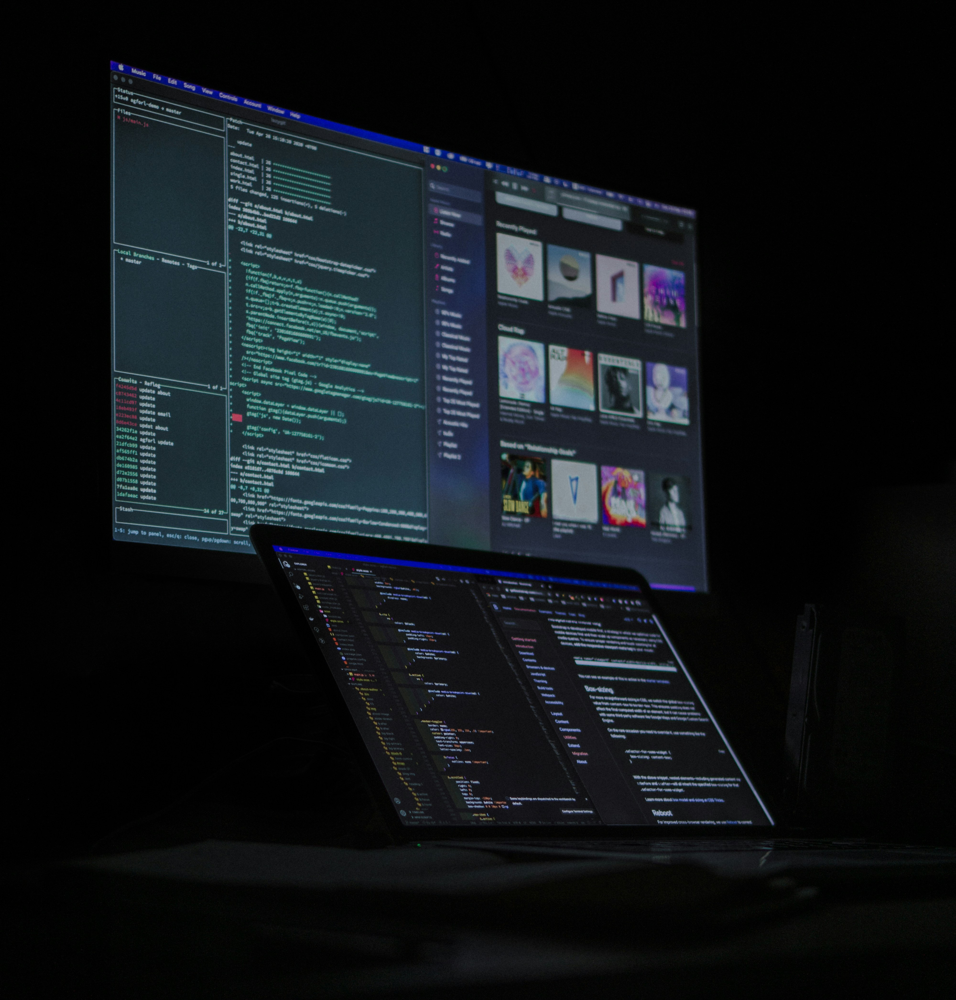

Personal Brand
Halo, saya Muhammad Ikhwal
Lulusan Teknik Informatika | Universitas Pamulang
Web Developer & Data Enthusiast
📩 Mari terhubung dan wujudkan transformasi digital bersama.
Hubungi SekarangHalo, saya Muhammad Ikhwal
Lulusan Teknik Informatika | Universitas Pamulang
Web Developer & Data Enthusiast
📩 Mari terhubung dan wujudkan transformasi digital bersama.
Hubungi Sekarang
Saya adalah fresh graduate dari Program Studi Teknik Informatika, Universitas Pamulang, lulus pada tahun 2025 dengan IPK 3,16. Saya memiliki ketertarikan kuat di bidang pengembangan aplikasi berbasis web dan analisis data, khususnya dalam mendukung pengambilan keputusan bisnis yang lebih efektif dan efisien.
Pada tugas akhir saya, saya membangun sebuah sistem prediksi berbasis algoritma Naive Bayes Classifier untuk mengidentifikasi potensi pelanggan dan mengoptimalkan strategi pemasaran, dengan studi kasus pada perusahaan Super Bangun Jaya.
Di luar aspek teknis, saya juga aktif membagikan konten edukatif dan inspiratif seputar teknologi melalui berbagai platform media sosial sebagai bentuk kontribusi saya dalam membangun literasi digital.
Tertarik bekerja sama atau berdiskusi lebih lanjut?
Saya terbuka untuk peluang kerja, kolaborasi proyek, atau konsultasi terkait pengembangan web dan analisis data.
Silakan hubungi saya melalui di bawah ini: